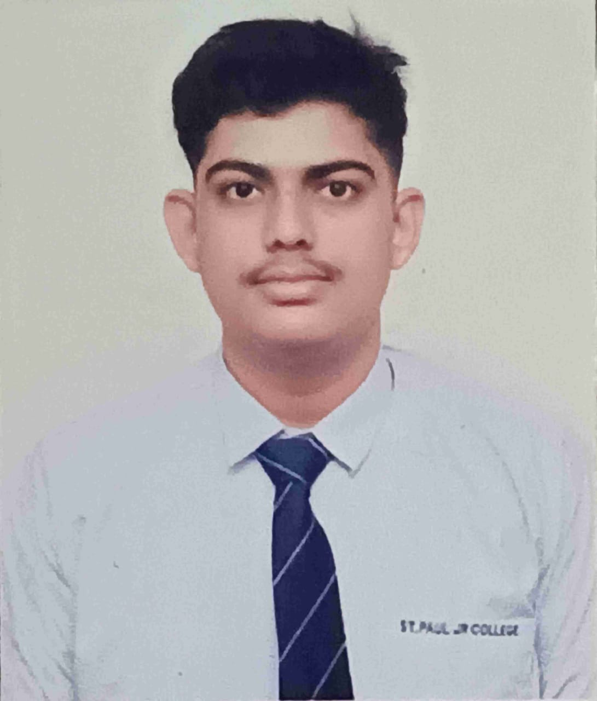

Krushna Thakur's Resume

Summary :
“Aspiring and highly motivated tech enthusiast with a passion for game development, animation, and emerging technologies like AI and robotics.
Currently building foundational skills in C++, Python, web development, and 3D design using Blender and Unreal Engine. Seeking opportunities to apply and grow my knowledge through hands-on projects, internships, and collaborations.
Eager to contribute to creative and tech-driven teams while continuously learning and innovating.”
Education :
Bachelor of Science (Honours) in Computer Science and Game Development
- College Name -Backstage Pass Institute Gaming and Technology
- University Name -Jawaharlal Nehru Architecture and Fine Arts University
- City, State, Country -Hyderabad,Telangana,India
- Expected Graduation: [June,2029]
- (Currently Pursuing, 1st Year)
Class 12 - CBSE (Science Stream)
- School Name -St. Paul Senior Secondary School
- City, State, Country -Nagpur, Maharashtra,India
- Year of Completion: 2025
- Percentage/Grade: 62.6% / B2
Class 10 - Maharashtra State Board of Secondary Education (MSBSHSE)
- School Name -Shahu's Garden High School
- City, State, India -Nagpur, Maharashtra, India
- Year of Completion: 2023
- Percentage/Grade: 89.2% / A
Portfolio Website :
All my projects among various field and interests are uploaded in the My Work Page of my portfolio website.
Skills :
- 🔧 Technical Skills
- 🐍 Programming Languages:
- Python - Proficient
- SQL - Basic knowledge
- HTML - Learned
- CSS - Currently learning
- C - Planning to learn
- C++ - Planning to learn
- 🌐 Web Development:
- Full-Stack Web Development - In Progress
- Frontend: HTML (done), CSS (in progress), JavaScript (next)
- Backend: To be learned
- 🎨 Design & 3D Tools
- Blender - Proficient in 3D modeling and animation
- Krita - Will be learning soon (for 2D illustration and animation)
- 🌍 Human Languages
- Hindi - Native speaker
- Marathi - Native speaker
- English - Fluent
- German (A2) - Currently learning
- Japanese (N5) - Currently learning
- 🛠 Ongoing Learning Goals
- Finish CSS by next week
- Start JavaScript after CSS (for full-stack)
- Learn C and C++ (for performance-based coding and system programming)
- Explore Krita (for 2D animation/drawing)
- Continue learning German and Japanese regularly
Contact Details :
Email : krushnathakur108@gmail.com
LinkedIn : Krushna Thakur
Instagram : _krushna.gour
Remote Job Preference : Hyderabad
City : Nagpur
Country : India